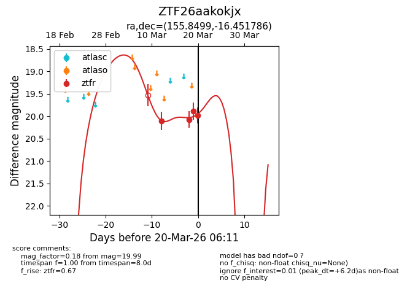
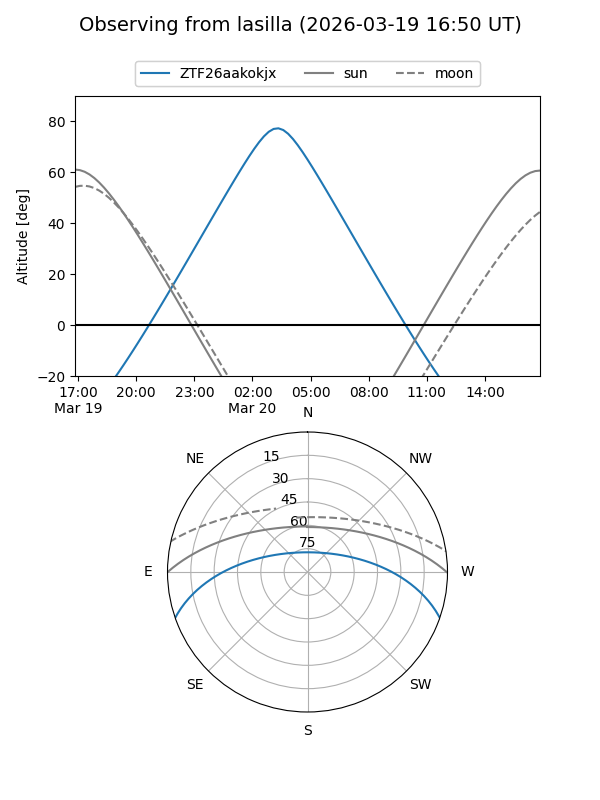
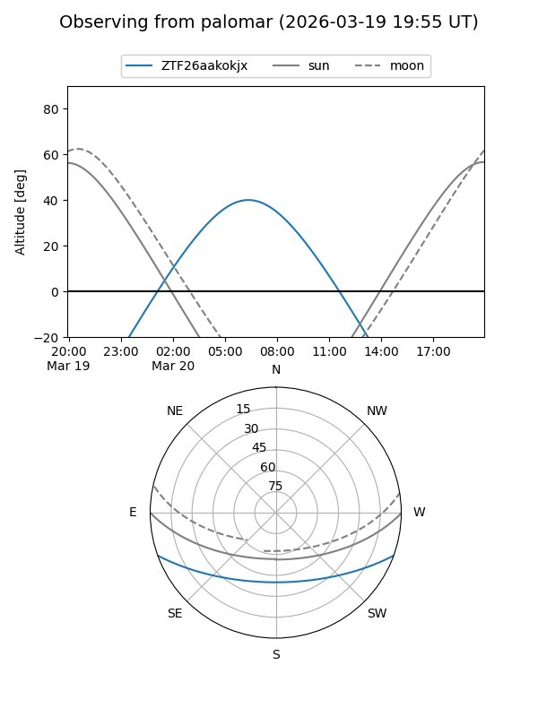

ZTF26aakokjx
Target ZTF26aakokjx at 2026-03-20 06:13
Aliases and brokers:
FINK: link
Lasair: link
ALeRCE: link
alt names
ZTF26aakokjx (ztf,fink_ztf)
Coordinates:
equatorial (ra, dec) = 155.8499,-16.45179
equatorial (HMS+DMS) = 10:23:23.99,-16:27:06.43
galactic (l, b) = (259.0966,+33.53538)
Flags:
Photometry:
last ztfr=19.99
4 ztfr detections
Lightcurve

Visibility


Additional plots